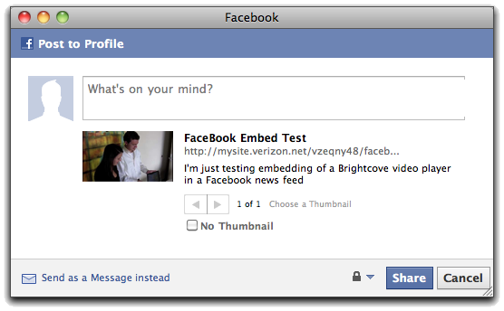

This article will provide you with an understanding of how
embedding
video in a Facebook news feed works, so that you can make it easy
for your viewers to embed your videos in their news feeds. There
are different stages,
depending how you want to provide the embedding:
The most basic way to embed your video is as follows:
Your users can enter any text they like to accompany the video
link. The link will send viewers back to your page to view the
video.
If you want to add additional information about the embedded video automatically into the news feed, you can use <meta> tags to do so. Facebook will automatically look at the <meta> and <link> tags in the page and use that information. For instance, you might want to add a title and description to the embedded video. The following meta tags will provide this information -- you can replace the bolded text with whatever you like:
<meta name="title" content="Facebook Embed Test" />
<meta name="description" content="I'm just testing embedding of a Brightcove video player in a Facebook news feed" />
Facebook incorporates the title and description so that the resulting entry looks like this:
The link here will still point back to your original page,
provided you entered the URL for it in the Host on your URL
setting.
You can add additional <link> tags to provide a preview
image for the video and even allow viewers to watch the video in
the
news feed itself.
To add a preview image, include the following link tag, with a URL pointing to your preview image (change the bolded portion of the code below to point to your own image):
<link rel="image_src" href="http://mysite.verizon.net/vzeqny48/images/HTML5VideoPreview.jpg" />
To allow your viewers to watch the video in the Facebook news feed, first make sure that you Facebook player meets Facebook guidelines:
- Turn off full-screen viewing in the player settings found in the Publishing Module
- If you have advertising enabled for the player, that's fine, but do not set any key/value pairs that would target advertising specifically for the Facebook environment.
To allow viewing of the embedded video within the Facebook news
feed, include the following link tag, with the URL used below, but
substituting your publisher, player, and video IDs (bolded below):
Note that this works for single videos -- for playlists, all you can do is provide the link back to your page, unless you use the Player API to update the link tags as described in the Automation section below.<link rel="video_src" href="http://c.brightcove.com/services/viewer/federated_f9?isVid=1&isUI=1&publisherID=20318290001&playerID=674388892001&domain=embed&videoId=589233309001" />
Now your video will have a preview image in the Facebook newsfeed, and viewers will be able to play the video itself within the news feed:<link rel="image_src" href="http://mysite.verizon.net/vzeqny48/images/HTML5VideoPreview.jpg" />
If you would like to provide a more prominent link to encourage sharing on Facebook, you can add code like this to your page:
The only thing you have to change in this code is the bolded URL for the page where your own video is published, though you can also modify the CSS code to style the link in any way you like.<!-- facebook button -->
<script type="text/javascript">function fbs_click() {
u=location.href;
t=document.title;
window.open('http://www.facebook.com/sharer.php?u='+encodeURIComponent(u)+'&t='+encodeURIComponent(t),'sharer','toolbar=0,status=0,width=626,height=436');
return false;
}
</script>
<style type="text/css">
.fb_share_link {
padding:2px 0 0 20px;
height:16px;
background:url(http://b.static.ak.fbcdn.net/images/share/facebook_share_icon.gif?8:26981) no-repeat top left;
}
</style>
<!-- In the tag below, replace the value of the u parameter in the href value with URL for your own page -->
<a href="http://www.facebook.com/share.php?u=http://mysite.verizon.net/vzeqny48/facebook_newsfeed_ver.html" target="_blank" class="fb_share_link" onClick="return fbs_click()">Share on Facebook</a>
The JavaScript function that the link points to opens the same dialog used by the standard Share tool:
